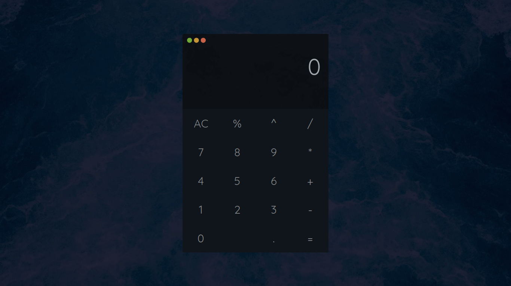

Projects
Biomarker Analyzer
A Java-based project concept for organizing blood test results, comparing biomarker values with reference ranges, and making biological data easier to understand.
- Java
- JavaFX
- CSV Data
- Biomarkers


Bee Identification GUI
A Java Swing project focused on biological classification, species identification, and user-friendly scientific interfaces.
- Java
- Java Swing
- Classification
- Biology

Digital Twin Longevity Concept
A personal concept exploring how lifestyle habits, biomarkers, and health data could be visualized in a digital model over time.
- Health Data
- Longevity
- Visualization
- Concept Design

Skills & Interests
Java
JavaFX
Java Swing
Molecular Biology
Biomarkers
Genetics
Longevity Science
Biological Data
Data Analysis
Data Visualization
About Me
Current focus
Bioinformatics
- Biomarkers
- Molecular Biology
- Genetics
- Longevity Science
- Biological Data
I am a bioinformatics and biology student interested in the intersection between biology, programming, and human health.
My main interests include molecular biology, biomarkers, genetics, longevity science, and biological data interpretation. I enjoy building projects that make complex biological information easier to organize, visualize, and understand.
My long-term goal is to continue developing my skills in bioinformatics and contribute to future research or technology related to aging, biomarkers, and personalized health.
Contact Me